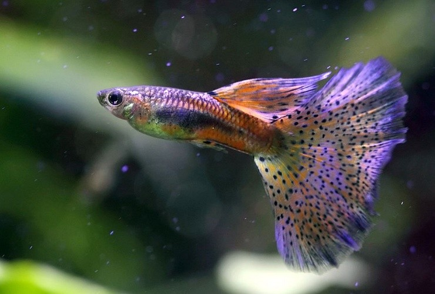
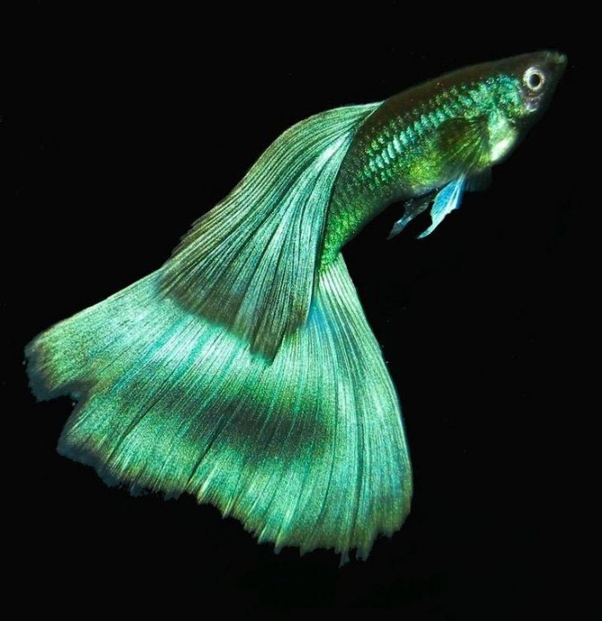
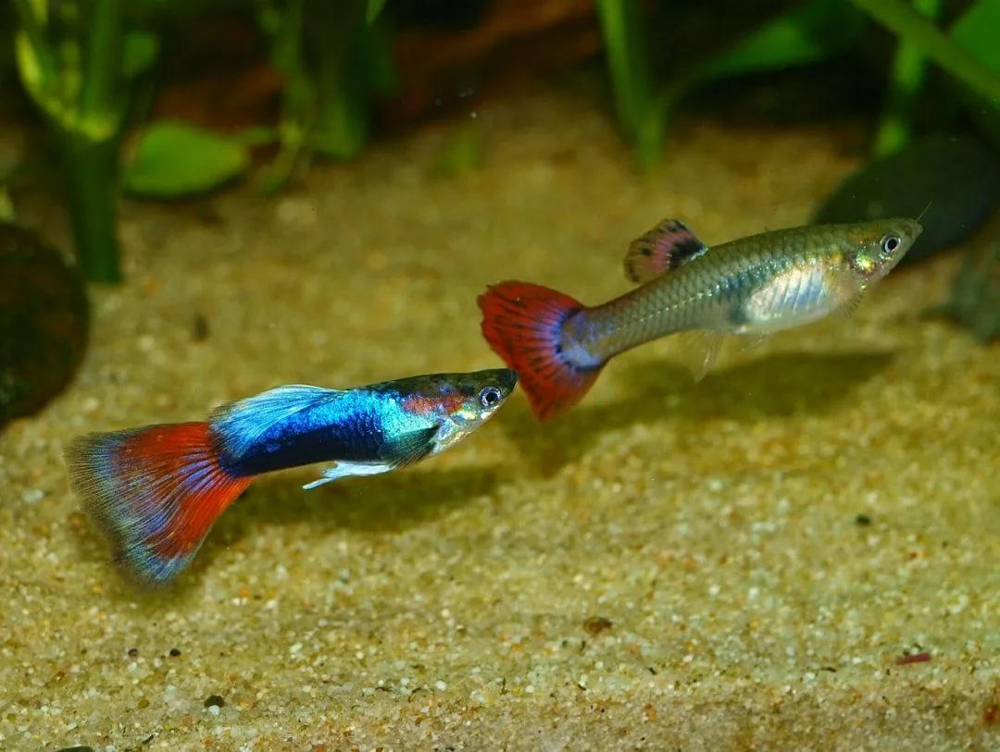
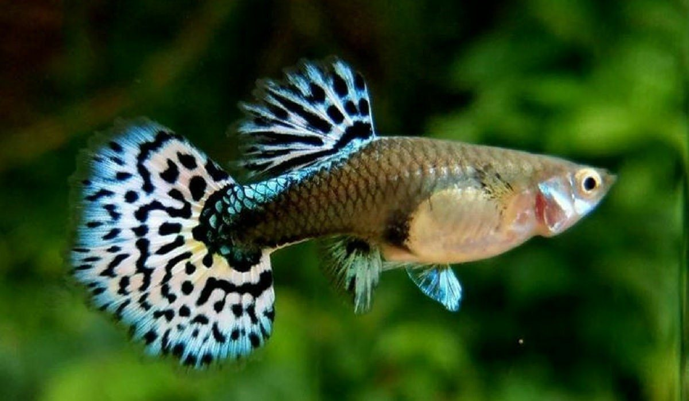
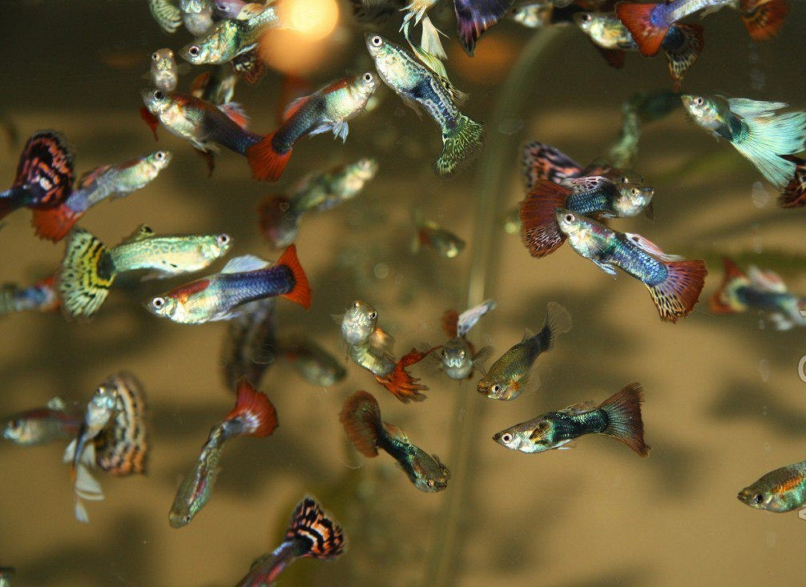
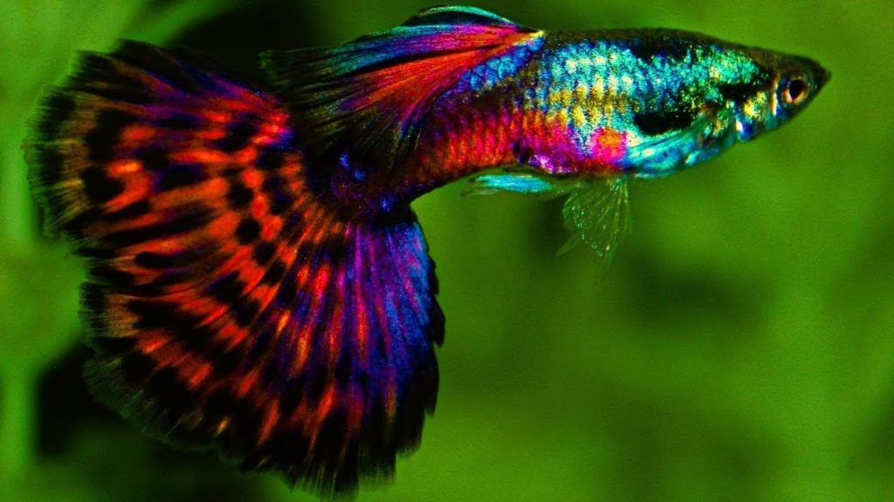
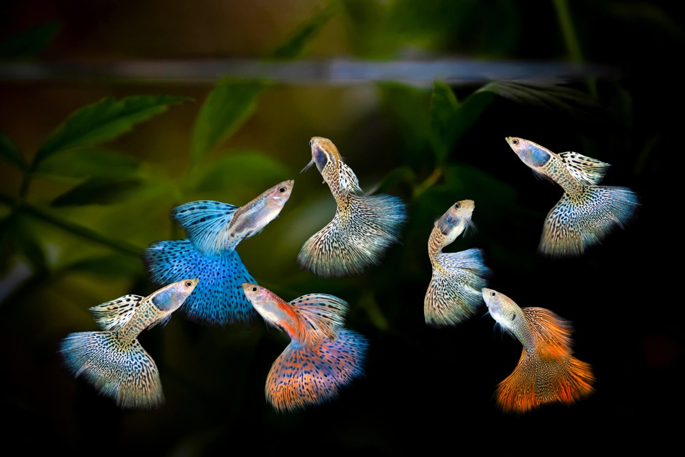
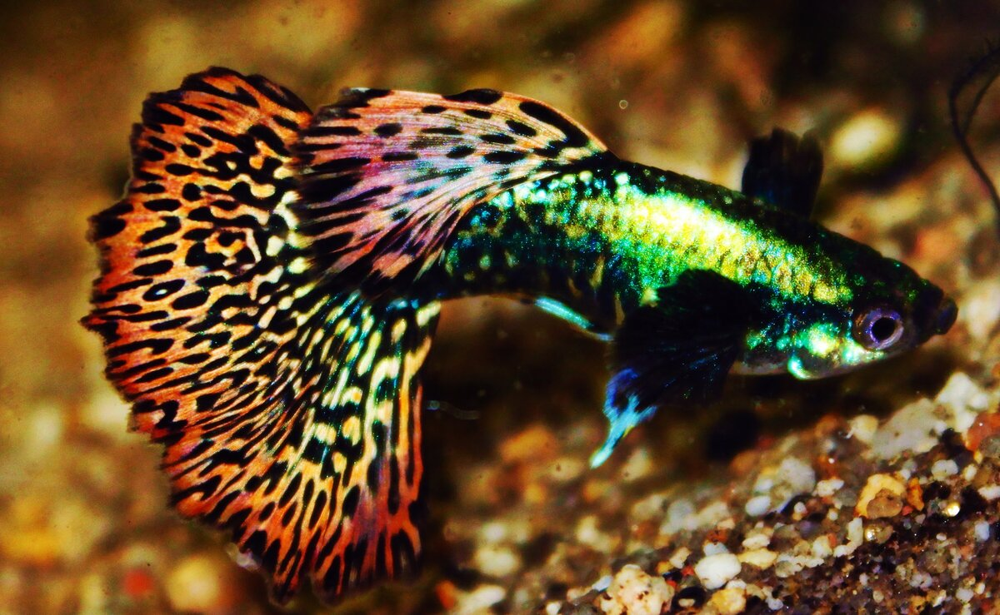
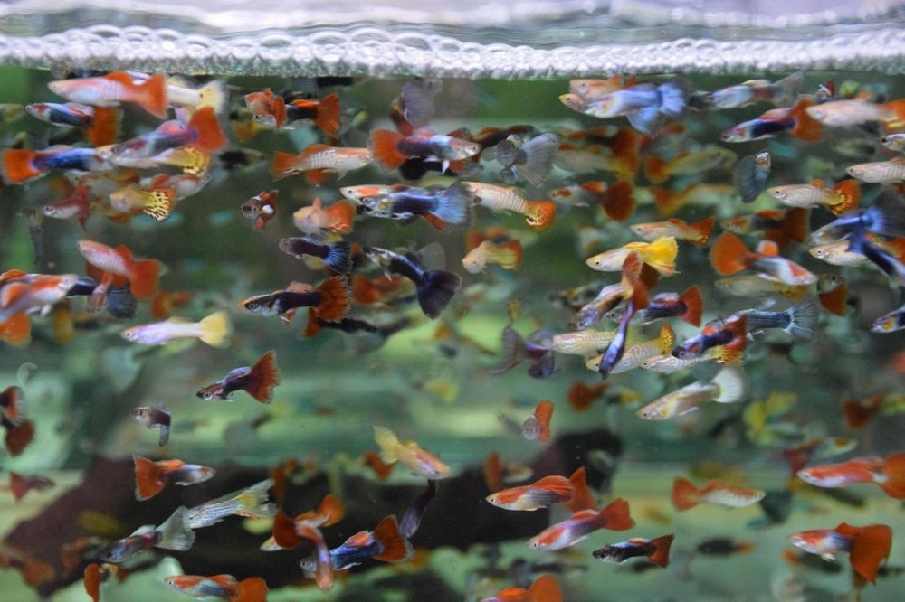

Описание рыбки Гуппи.
Гуппи — пресноводная живородящая рыба семейства пецилиевых. Обитает в Южной Америке. Популярная и неприхотливая аквариумная рыбка.
{kind=link}
Описание рыбки Гуппи.
Гуппи – это небольшая рыбка из семейства Пецилиевые. Средний размер тела у самца составляет 3 см, у самки – 6 см. Чешуя в виде ромбической сетки. Самки гораздо крупнее и толще самцов, не имеют сильно развитых вуалевых плавников и гораздо скромнее окрашены: в основном тело и хвост серые, иногда хвостовой плавник цветной или с пятнами.
{kind=link}
Что касается окраски, то природные особи не могут похвастаться ярким нарядом: серое тело и небольшие пятна на округлом хвостовом плавнике. Это позволяет эффективно прятаться от врагов среди густых зарослей. Выделяют несколько устойчивых групп рыбок в зависимости от формы хвостового плавника и окраски тела. Гуппи могут быть одноцветными, пятнистыми, с металлическим блеском и т.п.
{kind=link}
Теплолюбивые гуппи могут легко заболеть при низких температурах. Несмотря на выносливость, все-таки это тропические рыбки. Наиболее часто они заболевают микобактериозом. При этом рыбка имеет истощенный вид, брюшко втягивается, спинка изгибается. К сожалению, таких особей приходится уничтожать и после проводить дезинфекцию аквариума и всего оборудования.
{kind=link}
Историческая справка
Одним из первых ученых, который описал гуппи, стал известный немецкий зоолог Вильгельм Карл Хартвиг Петерс в 1859 году. Всем известное и привычное название "гуппи" рыбка получила по фамилии британского натуралиста Роберта Джона Лечмера Гуппи, изучившего и описавшего её в 1866 году. В современном мире природных гуппи уже не вылавливают в дикой природе. Многочисленные гибриды, полученные на специальных рыбных фермах, продаются миллионными партиями по всему свету. На мировом и государственном уровнях созданы стандарты пород гуппи. Практически во всех странах существуют огромные клубы любителей, которые участвуют в регулярных выставках этих прелестнейших рыб.
{kind=link}
Уход за рыбкой Гуппи
Гуппи считаются одними из самых неприхотливых видов рыб. Их лучше всего содержать небольшими группами от 6 шт. Для успешного содержания рыбок, важно соблюдать определённые параметры воды. А именно, температура её должна держаться в диапазоне +20…+27 градусов, жёсткость от 10 до 25 dGH, кислотность рН 6.5-8. Подмены воды в аквариуме с гуппи должны производиться регулярно, один раз в неделю. Для декорирования аквариума с гуппи интересно использовать грунты тёмного цвета - это подчёркивает яркие окраски рыб. В качестве декора можно применять любые материалы и предметы.
{kind=link}
Гуппи всеядны и отлично поедают как сухие корма (гранулы, хлопья), так и мороженые (мотыль, циклоп, дафнию, коретру, трубочник, артемию и др.) они непривередливы в еде. Появившись на свет, мальки с удовольствием начинают кушать мелкие корма. Кормление должно быть разнообразным, не стоит зацикливаться на одном виде корма. Кормить рыбок необходимо небольшими порциями, которые они смогут полностью съесть за несколько минут, так как не съеденный корм в течение времени будет разлагаться и повышать уровень азотистых соединений.
{kind=link}
Форма аквариума для гуппи может быть любой: прямоугольной, квадратной, круглой. Важно, чтоб аквариум был оснащён оборудованием: фильтром, терморегулятором. Освещение в аквариуме может быть ярким, подчёркивающим всю красоту рыб, гуппи не стрессуют от этого. Но необходимо помнить, что продолжительность яркого светового дня более 8 часов может спровоцировать активный рост нежелательных низших водорослей. Поэтому свет в аквариуме можно включать либо дробно, не превышая общую продолжительность в 8-10 часов, либо вообще по мере необходимости.
{kind=link}
Совместимость в аквариуме.
Гуппи очень миролюбивая и уживчивая рыбка, которая мало кого способна обидеть в общем аквариуме. Не стоит подселять к гуппи активных рыбок, которые могут их обидеть или обкусать вуалевые хвосты, например, барбусов , некоторых тетр, нотобранхиусов. Для крупных цихлид гуппи станут «живым кормом».
{kind=link}
Хорошими соседями для гуппи станут мирные рыбки, сходные по размеру: данио, расборы, моллинезии, неоны, тетры. Самое главное – не допускать перенаселение в аквариуме. Необходимо учитывать тот факт, что гуппи очень быстро размножаются и их численность может значительно возрасти за короткий промежуток времени. Часть мальков будет съедено другими рыбками, а порой и собственными родителями, поэтому естественные и искусственные укрытия для молоди обязательны.